艦これ 2015 秋イベント E-5 バニラ湾沖 後編
公開日：
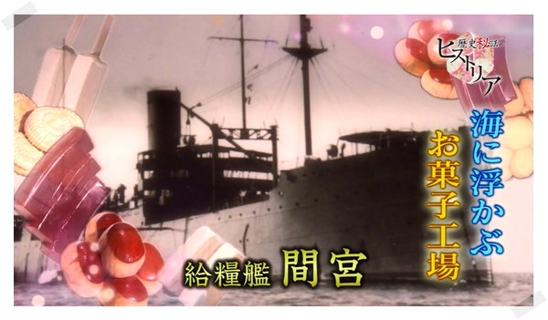
「間宮」が歴史秘話ヒストリアに登場！ めっちゃ面白かったな！！
http://www.nhk.or.jp/osaka-blog/historia/232760.html
俺的な番組のハイライト。
- 海に浮かぶお菓子工場「間宮」
- だいたいイギリスのせい
- 「間宮」の羊羹くっそ旨そう……
- 最高の菓子職人と、軍に回ってくる質の良い物資（庶民かわいそす……）
- 窯は機関の蒸気で。これがまたおいしい一因だったっぽい
- この羊羹を復刻したのが呉・風月堂で売っているのだそうだ（http://www.fugetudo.jp/yamato.html）
- その他にもサイダーや最中が作れたらしい。アイスクリームの冷蔵庫も
- 一方、アメリカ海軍にはアイスクリーム補給艦があったらしい……（https://twitter.com/Simon_Sin/status/672041833245970432）
- 「間宮」は前線で大人気だった
- 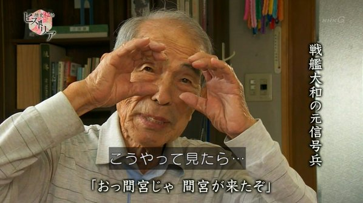 「間宮」をいち早く見つけるのが信号員の仕事 ← ｵｲｺﾗﾏﾃ
- 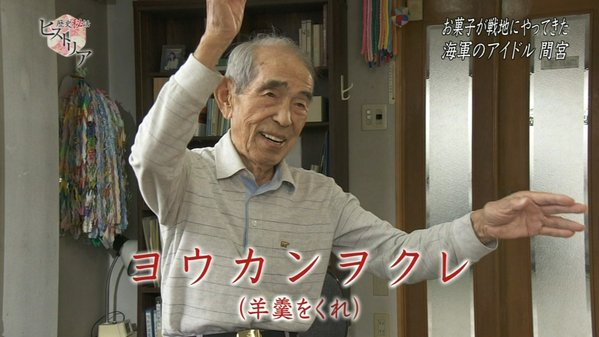 「ヨウカンヲクレ」の手旗信号 ← ｵｲｺﾗﾏﾃ
- 「間宮」が雷撃をうけて沈没の危機！
- 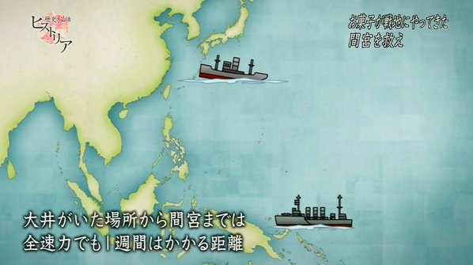 なぜか 1,000km 先から助けに行こうとする「大井」さん
- 高まる「大井」×「間宮」カップリングへの期待
- 潮「あ、ごめんなさい、先に助けちゃいました」
- アイドルの座が危ない「那珂」ちゃん（「那珂」ちゃんは「阿賀野」を助けに行く途中でやられちゃいました……）
- 足が遅くてイジられる「間宮」
- 「貴艦ハ前進ナリヤ？」
- 物資満載だから多少はね？
- フィリピンへ決死の輸送作戦にでる「間宮」、それを突け狙う潜水艦
- 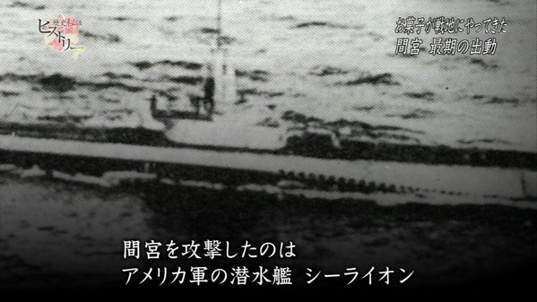「シーライオン、またお前か！！」
- そしてついに撃沈。タイムラインに「シーライオン」への憎悪が
- 撃沈のシーンはいつも悲しい。せっかく助かったのに「安堵死」だなんて切なすぎる
- ヒストリア恒例のいい感じの〆
- 「間宮」の元乗組員がもっていた写真と同じ写真が「間宮」でお菓子を作っていた乗組員の妹さんの手にも
- 涙腺を破壊しにかかる BGM
- 「間宮」の慰霊碑は、呉の長迫公園に。今度行ってみよう
- 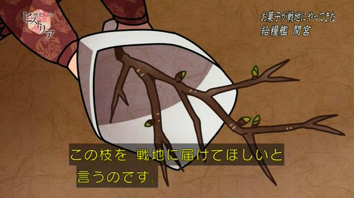 内地の女性が戦地へ桜の枝を贈る話はよかったよな！
――とまぁ、この話はこのぐらいで置いておいて。
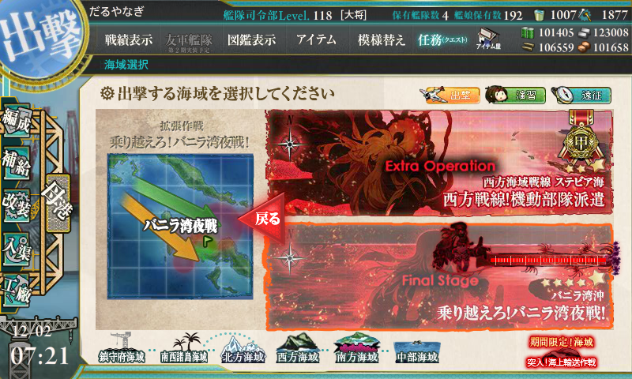
前回、めでたく E-5 バニラ湾沖 の輸送ゲージを破壊したオレたち。
今回は、戦闘ゲージの破壊へと出かけるのでした。ついでに「嵐」もほしいわん！
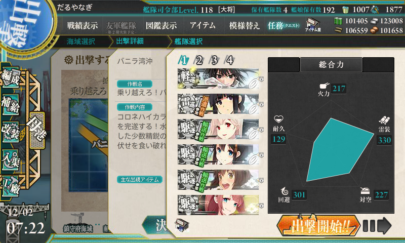
編成はちょっと弄ってみたよ。
ビフォー
- 「川内」（軽巡旗艦）：主砲×2、夜偵
- 「利根」（自由枠）：主砲×2、夜偵、瑞雲（つよいやつ）
- 「時雨」：主砲×2、照明弾
- 「夕立」：主砲×2、照明弾
- 「白露」：ドラム缶×3
- 「江風」：ドラム缶×3
アフター
- 「川内」（軽巡旗艦）：主砲×2、夜偵
- 「北上」（自由枠）：副砲×2、甲標的
- 「時雨」：主砲×2、照明弾
- 「夕立」：主砲×2、照明弾
- 「雪風」：主砲×2、水上電探
- 「江風」：主砲×2、水上電探
制空がないので、「川内」さんの夜偵は探照灯に替えようかと思ったが、途中二回の夜戦（＋ボス夜戦）で発動すればペイできるかと思い、そのままにしておいた。
- A → C → G：S勝利 → J：S勝利 → F → L：S勝利 → M：ボス A勝利
- A → C → G：S勝利 → J：A勝利 → F → L：S勝利 → M：ボス A勝利
- A → C → G：S勝利 → J：A勝利 → F → L：S勝利 → M：ボス S勝利
- A → C → G：S勝利 → J：A勝利（「夕立」大破撤退）
- A → C → G：S勝利 → J：A勝利 → F → L：A勝利 → M：ボス S勝利（以降、最終形態に）
- A → C → G：S勝利 → J：A勝利（「夕立」大破撤退）
- A → C → G：S勝利 → J：S勝利 → F → L：S勝利 → M：ボス A勝利
- A → C → G：S勝利 → J：S勝利 → F → L：S勝利 → M：ボス A勝利
- A → C → G：S勝利 → J：A勝利 → F → L：S勝利 → M：ボス S勝利
9戦でゲージ撃破。ボス到達は7回で、うちS勝利は3回（決戦支援のみ）。
雷巡の方が道中の安全度とボスの撃破率は相当上がるみたい？（ボス到達率77％、航空巡洋艦編成では49％） 割と余裕でクリアできました。
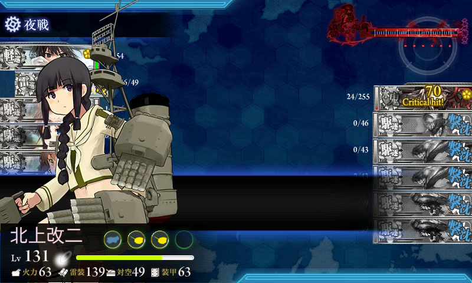
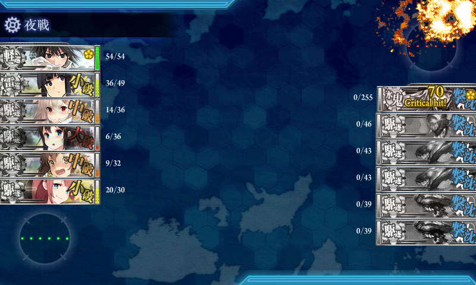
最後ケリをつけたのも「北上」さんでした。
ついでにイベント完遂！！ pic.twitter.com/B6IrYbW9Fe
— だるやなぎ に天使が舞い降りた！ (@daruyanagi) 2015年12月2日
しかも、ゲージ破壊と同時に「嵐」もドロップ。すごい運がよかった！ この調子で U-511 も掘れないかなぁ（ぉぃ
クリア報酬
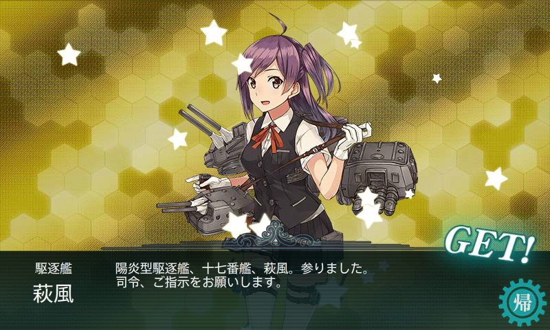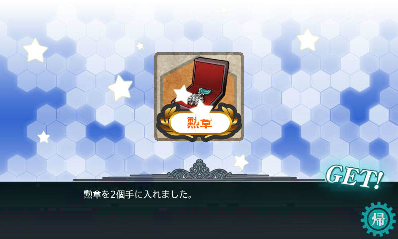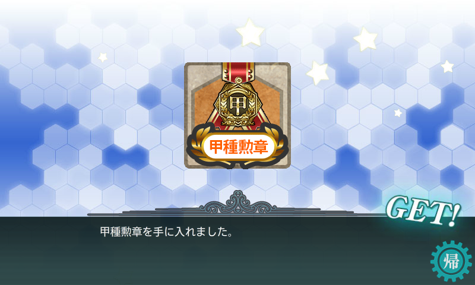
「萩風」めっちゃかわいいな……。
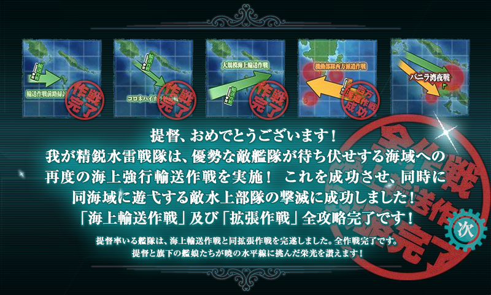
毎回これぐらいで終わってくれると、社会人提督としてはうれしいです。
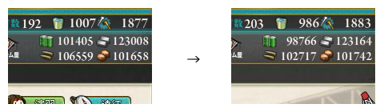
資材消費は 燃料 2,700、弾薬3,800、鋼材150、ボーキサイト100 でした。バケツは21個消費。